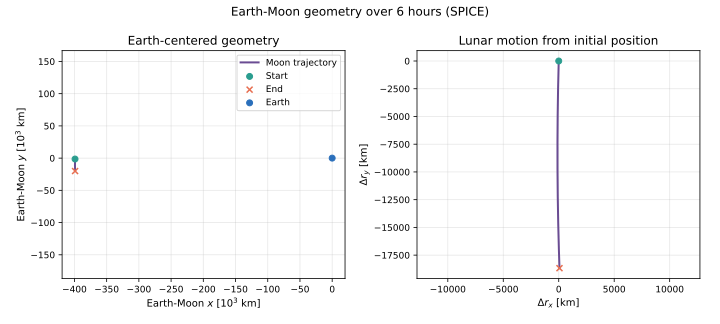
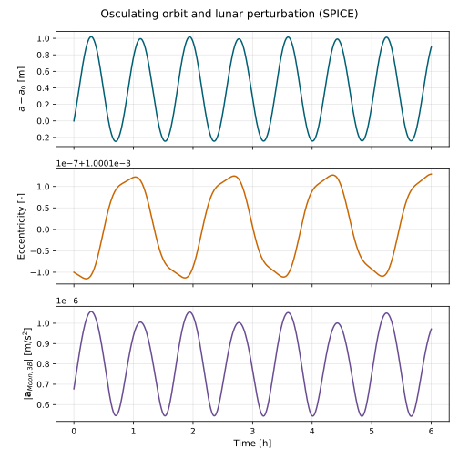
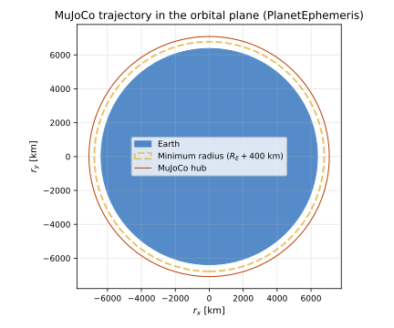
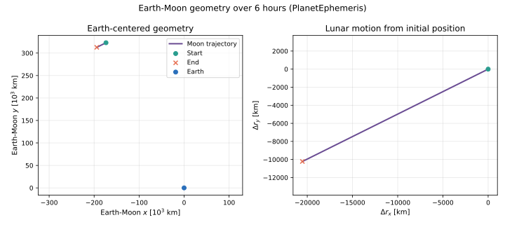
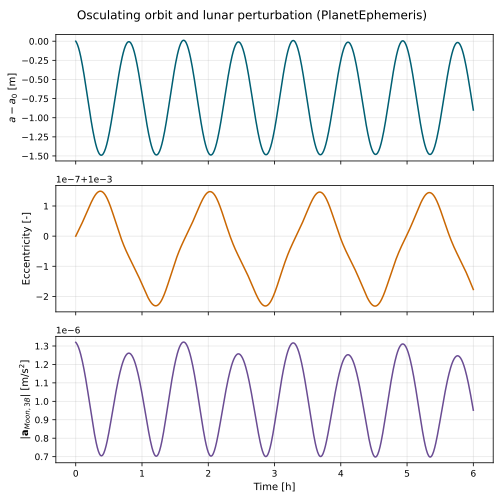

scenarioMJEarthMoonGravity
Overview
This tutorial demonstrates how to add Earth and Moon gravity to a MJScene with simIncludeGravBody. The same MuJoCo spacecraft and gravity-factory setup can be driven by either:
C++ Module: spiceInterface, which reads high-fidelity ephemerides from NAIF kernels, or
C++ Module: planetEphemeris, which propagates user-supplied heliocentric classical orbit elements with two-body Keplerian motion.
Select the ephemeris source through the useSpice argument to run().
The default is True. For example, the analytic ephemeris case is run with:
run(showPlots=True, useSpice=False)
Gravity-factory setup
Both cases begin by creating the same shared gravity-body descriptors. Earth is marked as the central body because the MuJoCo spacecraft state is initialized relative to Earth:
gravFactory = simIncludeGravBody.gravBodyFactory()
earth = gravFactory.createEarth()
earth.isCentralBody = True
moon = gravFactory.createMoon()
Each descriptor contains the body’s gravity model, gravitational parameter, central-body flag, and a planet-state input message. The only difference between the two cases is which ephemeris output is connected to those input messages.
Using SPICE planet states
The SPICE helper uses the bodies already present in the factory to configure and connect its output messages:
spiceObject = gravFactory.createSpiceInterface(
time="2025 NOVEMBER 15 12:00:00.000",
epochInMsg=True,
)
spiceObject.zeroBase = "Earth"
scene.AddModelToDynamicsTask(spiceObject, 75)
The factory creates the SPICE output messages in gravity-body insertion order,
so the first output is Earth and the second is the Moon in this example.
createSpiceInterface() subscribes each gravity body’s
planetBodyInMsg to the corresponding output automatically.
Setting zeroBase to Earth makes the planet states and the spacecraft state
Earth-relative. This is convenient but is not required by
NBodyGravity; it only requires all gravity-source states
to use one consistent inertial origin.
Using analytic PlanetEphemeris states
The analytic alternative names its output bodies and supplies one heliocentric classical-element set for each body:
planetObject = planetEphemeris.PlanetEphemeris()
planetObject.setPlanetNames(
planetEphemeris.StringVector(["earth", "moon"])
)
planetObject.planetElements = planetEphemeris.classicElementVector(
[earthElements, moonElements]
)
planetObject.zeroBase = "earth"
earth.planetBodyInMsg.subscribeTo(planetObject.planetOutMsgs[0])
moon.planetBodyInMsg.subscribeTo(planetObject.planetOutMsgs[1])
scene.AddModelToDynamicsTask(planetObject, 75)
Unlike the factory’s SPICE helper, a separately created PlanetEphemeris
module does not know which gravity descriptors it should drive. Its output
messages are therefore connected explicitly.
PlanetEphemeris propagates every supplied element set independently about
the Sun. It does not implement a hierarchical Earth-Moon model. To provide a
reasonable local approximation, this example constructs an initial
heliocentric Moon state by adding a geocentric lunar state to Earth’s
heliocentric state, then converts the result to heliocentric elements. This is
useful for short examples and deterministic tests. SPICE should generally be
preferred when accurate Earth-Moon geometry over long intervals is required.
Setting zeroBase to Earth translates both outputs after propagation. The
Earth message is therefore zero and the Moon message is Earth-relative. This
keeps the analytic planet messages in the same frame as the Earth-relative
MuJoCo state, which is required for correct Vizard placement. The selected
zero-base body must be configured on this same PlanetEphemeris instance.
Execution ordering and committed-state outputs
The ephemeris execution order is critical. Basilisk executes models with higher numeric priorities first; model insertion order in the Python script does not determine execution order. This example explicitly enforces the following sequence:
Top-level task:
MJScene (0) -> recorders and Vizard
MJScene dynamics task:
forward kinematics (10000) -> ephemeris (75) -> NBodyGravity (-1)
MuJoCo’s adaptive integrator evaluates dynamics between top-level task ticks.
The ephemeris must therefore run in the scene dynamics task before
NBodyGravity so that every force evaluation uses planet positions for the
current integrator time:
scene.AddModelToDynamicsTask(
ephemeris, EPHEMERIS_PRIORITY
)
Integrator stages use provisional states. Without an additional evaluation, messages written by dynamics-task models can therefore describe the last integrator stage rather than the state committed at the end of the step. This example enables:
scene.extraEoMCall = True
After integration, MJScene then executes its dynamics task once more at the
top-level task time using the committed MuJoCo state. This final evaluation
refreshes the forward-kinematics, ephemeris, and gravity outputs before the
recorders and Vizard execute. It does not advance or otherwise change the
integrated state. Because this final dynamics-task evaluation supplies the
current ephemeris messages, the ephemeris module does not also need to be added
to the top-level task.
Attaching gravity to MuJoCo
After either ephemeris has been configured, one factory call completes the MuJoCo gravity setup:
gravity = gravFactory.addBodiesTo(scene)
The factory creates one NBodyGravity model, adds Earth and the Moon as gravity sources, and adds every MuJoCo body as a gravity target. For the articulated CubeSat used here, gravity is applied at the center of mass of both the hub and the reaction wheel.
Illustration of Simulation Results
The scenario test runs both ephemeris cases and saves three figures per case. The first shows the spacecraft trajectory in its orbital plane, including the Earth surface and the required \(R_E + 400\) km minimum-radius boundary. The initial orbit has a 700 km periapsis altitude, and the scenario checks the recorded three-dimensional radius to ensure it remains above the 400 km boundary. The second figure shows the Earth-Moon geometry during the simulation, and the third shows osculating spacecraft elements and the magnitude of the Moon’s third-body acceleration.





- scenarioMJEarthMoonGravity.run(showPlots: bool = False, useSpice: bool = True) Dict[str, Figure][source]
Run the Earth-Moon gravity tutorial.
- Parameters:
showPlots (bool, optional) – If
True, display the generated figures. Defaults toFalse.useSpice (bool, optional) – If
True, use SPICE planet states. IfFalse, use analyticPlanetEphemerisstates. Defaults toTrue.
- Returns:
Generated figures keyed by documentation image name.
- Return type:
Dict[str, plt.Figure]